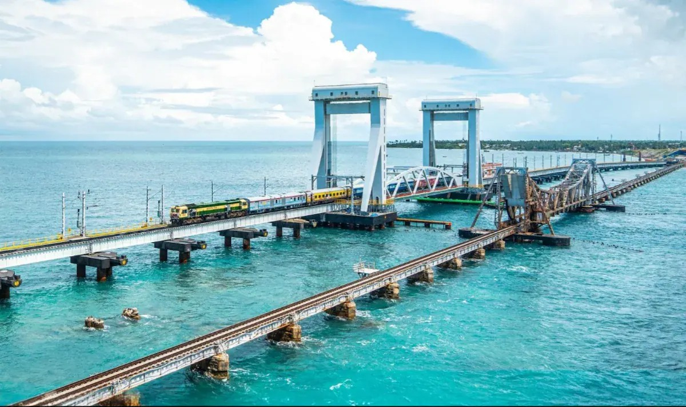
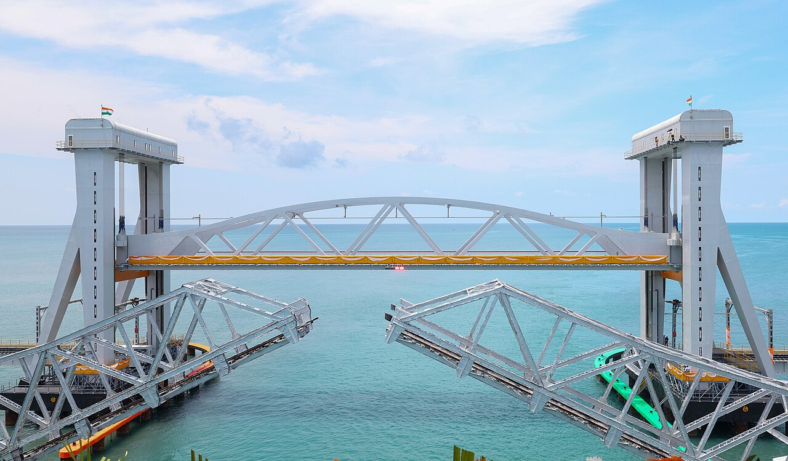

Pamban bridge


- The Pamban Bridge is a famous sea bridge located in Tamil Nadu.
- It connects the town of Rameswaram with mainland India across the Palk Strait.
- The bridge is one of the oldest and most important railway bridges in India.
- The bridge was opened in 1914 and is well known for its beautiful ocean view and engineering design.
- It was India’s first sea bridge and was mainly built for trains.
- Later, a road bridge was also constructed nearby for vehicles.
- One special feature of the bridge is its center section, which can open to allow ships and boats to pass through the sea.
- The bridge is surrounded by blue water, fishing boats, and strong sea winds, making it a popular tourist attraction.